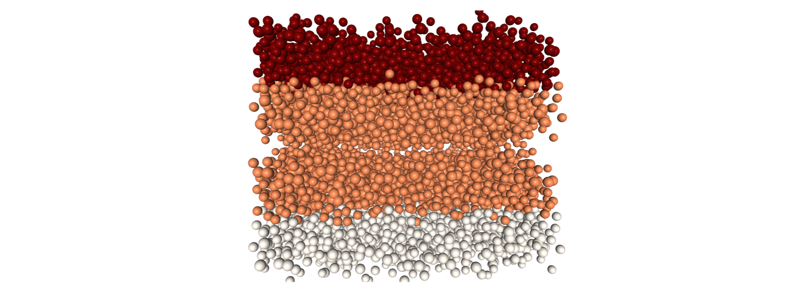
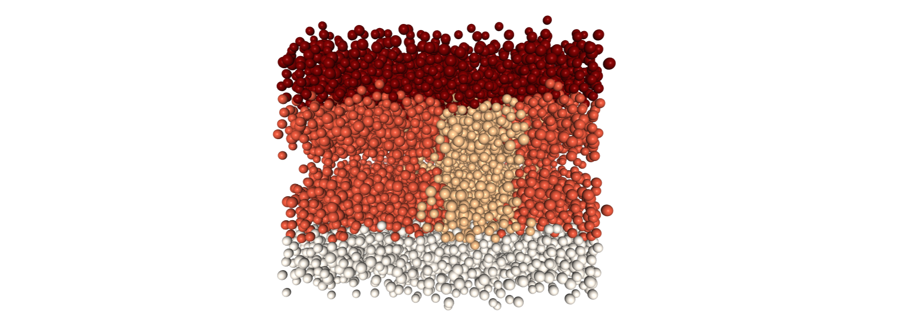
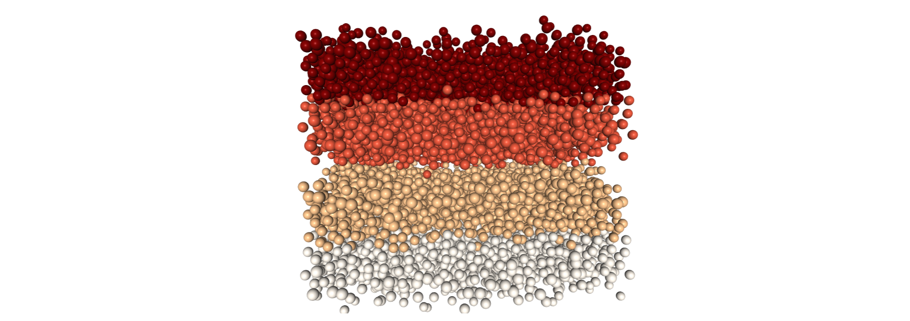
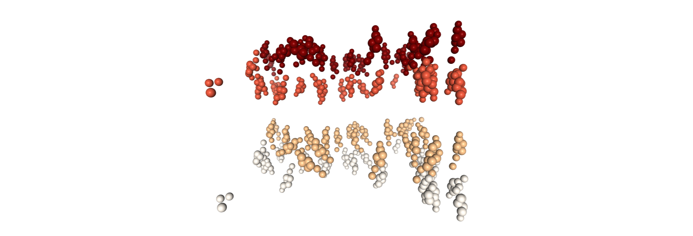

Finding leaflets in a double planar bilayer¶
This notebook demonstrates the performance of the “orientation” leaflet-finding algorithms on an example double planar bilayer of coarse-grained DPPC and CHOL lipids. Other algorithms are provided only for the first and easiest example (the entire membrane) as they cannot handle the two inner leaflets.
The particle groups analysed are:
u: the entire membranehalf: half the membrane, randomly dispersedhalf_chol: the CHOL molecules inhalffifth: 1/5th the membrane, randomly dispersedfifth_chol: the CHOL molecules infifth
[1]:
import MDAnalysis as mda
import numpy as np
import nglview as nv
from MDAnalysis.analysis.leaflet import LeafletFinder
from MDAnalysis.tests.datafiles import Martini_double_membrane
[2]:
u = mda.Universe(Martini_double_membrane)
half = u.residues[::2].atoms
half_chol = half.select_atoms('resname CHOL')
fifth = u.residues[::5].atoms
fifth_chol = fifth.select_atoms('resname CHOL')
[13]:
def show_leaflets(ag, select="name PO4 GL1 ROH", n_groups=4, **kwargs):
"""Get and show coloured leaflets."""
u = ag.universe
lf = LeafletFinder(ag, select=select, n_groups=n_groups, **kwargs)
n_residues = ', '.join(list(map(str, lf.sizes)))
print(f"Found {len(lf.leaflets)} leaflets: {n_residues} residues")
u.add_TopologyAttr('tempfactors')
for i, lfl in enumerate(lf.leaflets):
lag = lfl.residues.atoms
lag.tempfactors = np.zeros(len(lag)) + i
view = nv.show_mdanalysis(lf.residues)
view.clear_representations()
view.add_representation('spacefill', color_scheme='bfactor')
return view
def get_leaflets(ag, select="name PO4 GL1 ROH", **kwargs):
LeafletFinder(ag, select=select, **kwargs)
Entire membrane¶
Graph¶
Graph cannot handle the inner leaflets being so close.
[14]:
show_leaflets(u, method="graph", cutoff=12)
Found 7 leaflets: 808, 407, 1, 1, 401, 1, 1 residues

Images embedded to save space.
Spectral clustering¶
Spectral clustering breaks down immediately. I’ll leave it out from here on.
[15]:
show_leaflets(u, method="spectralclustering", cutoff=80)
Found 4 leaflets: 469, 408, 403, 340 residues

Orientation¶
Orientation works.
[16]:
show_leaflets(u, method="orientation")
Found 4 leaflets: 408, 408, 402, 402 residues

Half the residues¶
[17]:
show_leaflets(half, method="orientation")
Found 4 leaflets: 203, 203, 202, 202 residues
Half CHOL¶
Default cutoff won’t do here.
[18]:
show_leaflets(half_chol, method="orientation")
Found 4 leaflets: 33, 31, 15, 11 residues
A decent guideline is half the length of the membrane.
[19]:
show_leaflets(half_chol, method="orientation", cutoff=60, n_groups=4)
Found 4 leaflets: 23, 23, 22, 22 residues

Fifth¶
[20]:
show_leaflets(fifth, method="orientation", cutoff=100, n_groups=4)
Found 4 leaflets: 82, 82, 80, 80 residues
Fifth CHOL¶
[21]:
show_leaflets(fifth_chol, method="orientation", cutoff=60, n_groups=4)
Found 4 leaflets: 10, 10, 8, 8 residues
[ ]:
%timeit get_leaflets(fifth_chol, method="orientation", cutoff=60)
🦉